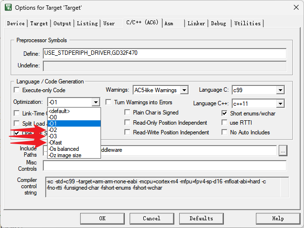

<!DOCTYPE lake>
<h2 data-lake-id="ENbrx" id="ENbrx"><span data-lake-id="u483f5d42" id="u483f5d42">开发流程</span></h2><ol list="u870adb9e"><li data-lake-id="u7d72d8a0" fid="ucba4e68c" id="u7d72d8a0"><span data-lake-id="ud449fe74" id="ud449fe74">配置RTC时钟</span></li><li data-lake-id="u5d2b2566" fid="ucba4e68c" id="u5d2b2566"><span data-lake-id="ud744a55c" id="ud744a55c">设置RTC闹钟</span></li><li data-lake-id="ud2fc0644" fid="ucba4e68c" id="ud2fc0644"><span data-lake-id="u44874acc" id="u44874acc">配置RTC闹钟中断</span></li><li data-lake-id="u8172b7c7" fid="ucba4e68c" id="u8172b7c7"><span data-lake-id="uf7ac4514" id="uf7ac4514">实现中断函数</span></li></ol><h4 data-lake-id="aXU6I" id="aXU6I"><span data-lake-id="ua5b7e048" id="ua5b7e048">RTC闹钟初始化</span></h4><span class="yuque-card-unsupported">[codeblock]</span><h4 data-lake-id="xtUiV" id="xtUiV"><span data-lake-id="u0706dcde" id="u0706dcde">中断函数</span></h4><span class="yuque-card-unsupported">[codeblock]</span><h4 data-lake-id="nyolI" id="nyolI"><span data-lake-id="ua96efa52" id="ua96efa52">完整代码</span></h4><span class="yuque-card-unsupported">[codeblock]</span><p data-lake-id="u3b532aa4" id="u3b532aa4"><br/></p><h2 data-lake-id="W0Fg3" id="W0Fg3"><span data-lake-id="u38cda75b" id="u38cda75b">闹钟Bug处理</span></h2><p data-lake-id="u2b6b6446" id="u2b6b6446"><span data-lake-id="u489e8142" id="u489e8142">如果Alarm闹钟</span><strong><span data-lake-id="u5121e94f" id="u5121e94f">未正确触发</span></strong><span data-lake-id="uf86e6028" id="uf86e6028">，或是</span><strong><span data-lake-id="ud4ec7563" id="ud4ec7563">频繁触发</span></strong><span data-lake-id="u709fa3e3" id="u709fa3e3">，先检查编译环境配置，尝试把Optimization等级分别调整为</span><code data-lake-id="ud24ce67d" id="ud24ce67d"><span data-lake-id="ue9f2fef7" id="ue9f2fef7">-O2 </span></code><span data-lake-id="u65f914d0" id="u65f914d0">，</span><code data-lake-id="u24a72841" id="u24a72841"><span data-lake-id="u431b655d" id="u431b655d">-O3</span></code><span data-lake-id="u3efdfaa2" id="u3efdfaa2"> ，</span><code data-lake-id="u45ba04e3" id="u45ba04e3"><span data-lake-id="uaeb37c6e" id="uaeb37c6e">-Ofast</span></code><span data-lake-id="uc265414b" id="uc265414b"> 后再编译烧录。</span></p><p data-lake-id="u899c3726" id="u899c3726"></p><h2 data-lake-id="ylXHt" id="ylXHt"><span data-lake-id="u37460a3c" id="u37460a3c">练习题</span></h2><ol list="u08017d46"><li data-lake-id="ub0daef88" fid="ufdc8589f" id="ub0daef88"><span data-lake-id="uc7538193" id="uc7538193">实现RTC闹钟的设置和中断配置</span></li></ol>